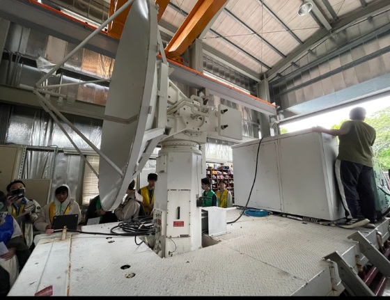
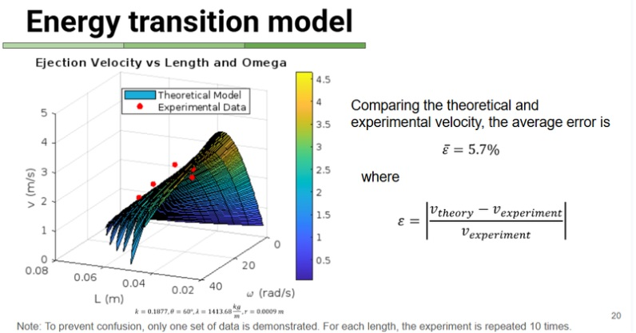
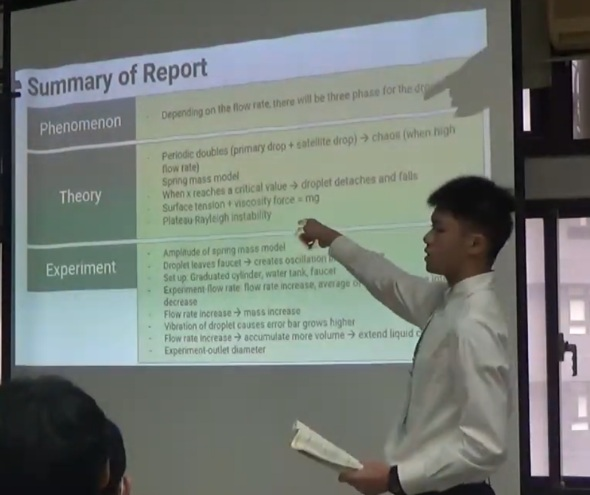

ENGINEERING THE FUTURE
徐敏恆
Min-Heng Hsu
關於我 / Profile
我是物理辯論社社長。我擅長將物理現象公式化，並透過嵌入式系統實現精準控制。
從物辯全國銅牌到自製拉曼光譜儀，我的目標是透過工程解決最前沿的科學難題。
地球科學 / Earth Science
太陽黑子自動追蹤系統 ➔
結合 Arduino 與 PID 演算法，將經緯儀改造為具備自動補償與追蹤功能的天文觀測設備。
Embedded SystemPID Control

地科奧林匹亞培訓
深入鑽研地質與大氣物理，具備跨領域的自然科學觀察與數據分析能力。
物理辯論 / Physics Fight

義大利麵加速器 ➔
探討義大利麵在彎曲管路中的斷裂機制與噴射速度。全國銅牌核心研究項目。
Fracture MechanicsEnergy Ratio

物辯社社長經歷
統籌全國賽團隊培訓，帶領隊伍進行科學建模、數據擬合與英文攻防對辯訓練。
研究作品 / Research

Quantum Fingerprint: 自製拉曼光譜儀 ➔
設計 DIY 分光計與光路系統，觀測分子的量子振動指紋。
自動化觀測經緯儀 ➔
將電機控制技術導入地科觀察，實現精密追蹤系統。